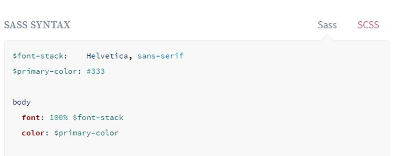
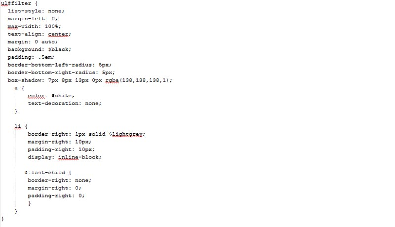
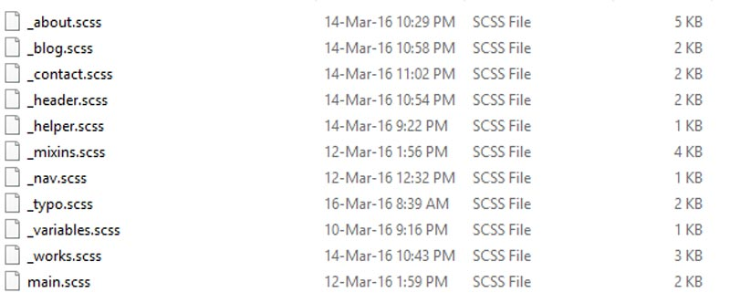

Mobile First & SASS – Project Evaluation
Aim: To rebuild my portfolio website using SASS & Mobile First approach.
- Objectives:
- To investigate the best practices
- To extract and reuse some of the styles and other elements from the old website
- To find a way that the stylesheet can be easier to manage.
- To save different stages with a version control system (GIT)
As I mentioned in my previous blog post, in order to get deeper understanding, I had to research on both topics. The official SASS website has helped to understand the importance of variables, mixins and nesting. I used the basic SCSS syntax in my code, which is similar to normal CSS, unlike the SASS syntax that does not use any curly brackets and semicolons, only indentation.
See the image below:
Zell Liew’s blogpost about ‘How to write mobile-first css’ has helped me to understand the principles of mobile first. After the research phase, armed with fresh knowledge, I was ready to start the coding.
I was able to reuse some of the core styles from my old site, and nest them into each other.
See the image below:
I have saved all the colours and fonts into variables, thus I could reuse them multiple times across my stylesheet. I gave them meaningful names (such as $title : #525252 for headings ) as it will always make sense, even if I change the colour of the variable.
To make the files easier to manage, I have only applied the general styles on my main stylesheet (skip links, containers, footer and link ), the rest of my styles are sorted into 10 different stylesheets and imported to the main file. As every page is different on the website, I have created a scss file for every page, a variables and a mixins file too. With simple CSS, I was unable to do this without significant performance loss, but fortunately SASS concatenates the imported files if the filename starts with an underscore (e.g. _mixins.scss).
See the image below:
I have created a few mixins (reusable blocks) in this project. Probably the two most commonly used were the media query and font-size mixins.
In the media query mixin, I have defined three different screen-sizes, see the following code snippet:
@mixin large-screen {
@media only screen and (min-width: 120em) {
@content;
}
}
@mixin medium-screen {
@media only screen and (min-width: 50em) {
@content;
}
}
@mixin small-screen {
@media only screen and (min-width: 37.5em) {
@content;
}
}
These media query mixins were nested to each declaration block in the following way:
.my-name{
background: $white;
color: $title;
text-align: center;
padding: 1%;
text-shadow: 2px 2px 2px rgba(255, 255, 255, 1);
@include small-screen { //breakpoint for small screens
@include font-size(45px)
}
@include medium-screen{ //breakpoint for medium-size screens
margin-top: 2em;
@include font-size(80px)
}
@include large-screen{ //breakpoint for large screens
margin-top: 1.5em;
@include font-size(100px)
}
}
I have created a font-size mixin, which is using px for older browsers and outputs rem for modern browsers.
See the following code snippet:
@function calculateRem($size) {
$remSize: $size / 16px; // 1 rem = 16px
@return $remSize * 1rem;
}
@mixin font-size($size) {
font-size: $size; //Firstly it will output the size in px for older browsers
font-size: calculateRem($size); //Then in rem for modern browsers
}
I have saved everything on my public GitHub repo, feel free to download it